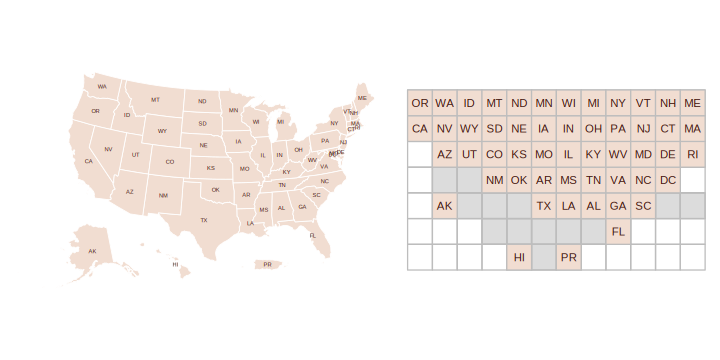
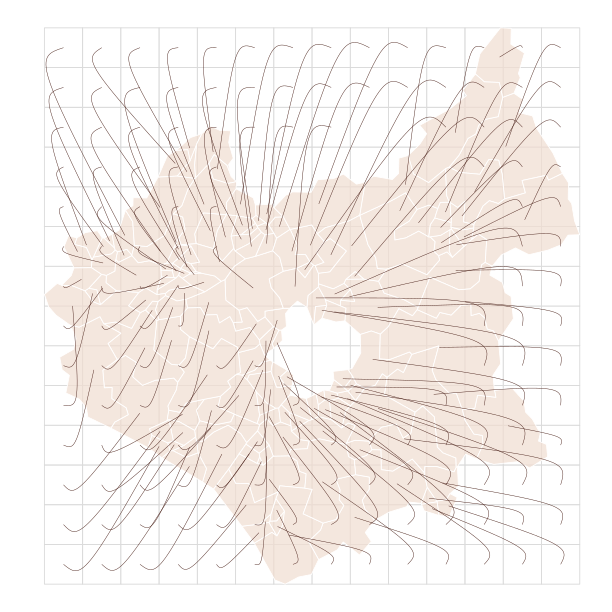

Generating gridmap layouts
Roger Beecham
2023-03-01
Source:vignettes/generate-gridmaps.Rmd
generate-gridmaps.RmdIntroduction
This vignette describes the process of generating gridmap layouts in
gridmappr. Given a set of geographic point locations,
gridmappr creates a grid (with stated row,
column dimensions) and places each point in a grid cell such
that the distance between points in geographic space and that within the
grid space is minimised. After exploring various gridmap arrangements,
this vignette demonstrates how those maps can be plotted for analysis:
building up a polygon file for grid layout solutions to encode them as
thematic maps and showing how geographically-arranged charts can be
created using the allocation and with standard calls to
ggplot2.
gridmappr is an R implementation of Jo Wood’s Observable
notebooks on Linear
Programming solvers and their application to the Gridmap
Allocation problem.
Generate allocation with points_to_grid()
The main allocation function in gridmappr is
points_to_grid(). This will return grid cell positions
(row and column identifiers) for a given set of
geographic locations. It is parameterised with:
-
ptsA tibble of geographic points (x,y) to be allocated to a grid. -
n_rowMaximum number of rows in grid. -
n_colMaximum number of columns in grid. -
compactnessOptional parameter between0and1where0allocates towards edges,0.5preserves scaled geographic location and1allocates towards centre of grid. Default is1(compact cluster). -
spacersOptional list of grid cell locations defining grid location of fixed spacers which cannot be allocated points. Coordinates are in (row,column) order with origin(1,1)in bottom-left. Default is an empty list.
London Boroughs
For generating a gridmap layout of 33 London boroughs, we try an 8x8 regular grid.
-
n_rowSet to 8. -
n_colSet to 8. -
compactnessSet to .6, attempting to preserve the geographic layout with a degree of compactness around the grid centre.
n_row <- 8
n_col <- 8
pts <- london_boroughs |>
st_drop_geometry() |>
select(area_name, x = easting, y = northing)
solution <- points_to_grid(pts, n_row, n_col, compactness = .6)gridmappr allows for spacers (light grey) to be
specified: grid cells that further constrain the distribution by not
allowing points to be allocated to them. Adding some targeted spacers,
we can get close to the LondonSquared
layout.
n_row <- 7
n_col <- 8
spacers <- list(
c(1, 3), c(1, 5), c(1, 6),
c(2, 2), c(2, 7),
c(3, 1),
c(6, 1), c(6, 2), c(6, 7), c(6, 8),
c(7, 2), c(7, 3), c(7, 4), c(7, 6), c(7, 7)
)
pts <- london_boroughs |>
st_drop_geometry() |>
select(area_name, x = easting, y = northing)
solution <- points_to_grid(pts, n_row, n_col, compactness = 1, spacers)
US States
There are other instances where some manual control over the allocation is desirable – including Alaska, Hawaii and Puerto Rico in the grid of US states for example.
n_row <- 7
n_col <- 12
pts <- us_states |>
st_drop_geometry() |>
select(STUSPS, x, y)
solution <- points_to_grid(pts, n_row, n_col, compactness = .8)
Again this can be addressed by judiciously inserting spacers.
n_row <- 7
n_col <- 12
spacers <- list(
c(4, 2), c(4, 3),
c(3, 5), c(3, 4), c(3, 3), c(3, 12), c(3, 11),
c(2, 4), c(2, 5), c(2, 6), c(2, 7), c(2, 8)
)
pts <- us_states |>
st_drop_geometry() |>
select(STUSPS, x, y)
solution <- points_to_grid(pts, n_row, n_col, compactness = .9, spacers)
Leicestershire Wards
Geographies with ‘holes’ are a particular challenge for grid layouts. By setting the compactness to zero, allocations are pushed to the edge of the grid, preserving the internal space containing the separate City of Leicester.
n_row <- 14
n_col <- 14
pts <- leics_wards |>
st_drop_geometry() |>
select(ward_name, x = easting, y = northing)
solution <- points_to_grid(pts, n_row, n_col, compactness = 0)
Building gridded polygon objects with make_grid()
Once a layout has been generated, you may wish to create a
corresponding polygon object so that the layout can be mapped. This can
be achieved with make_grid().
The function takes an sf
data frame of ‘real’ geography and returns an sf data frame
representing a grid, with variables identifying column and
row IDs (bottom left is origin) and geographic centroids of
grid squares. The gridded object can then be joined on a gridmap
solution returned from (points_to_grid()) in order to
create an object in which each grid cell corresponds to a gridmap
allocation position.
make_grid() takes the following arguments:
-
sf_fileAn sf object to pass grid over. -
n_rowNumber of rows in grid. -
n_colNumber of columns in grid.
Create layout solution and grid object
First we generate a gridmap layout solution (named
solution) for Leicestershire wards.
n_row <- 14
n_col <- 14
pts <- leics_wards |>
st_drop_geometry() |>
select(ward_name, x = easting, y = northing)
solution <- points_to_grid(pts, n_row, n_col, 0)Next, create the gridded polygon object using
make_grid(). Supply the sf file of
Leicestershire polygons (leics_wards, comes with
gridmappr) and the dimensions of the grid, the same as
those used to generate the layout solution.
grid <- make_grid(leics_wards, n_row, n_col)Plot grid object using geom_sf()
Cells of the grid that have a ward allocated to them can then be
isolated by joining the gridded object (grid) on the layout
solution.
Below we plot the gridded sf object using ggplot2’s geom_sf
geom.
grid |>
left_join(solution) |>
mutate(is_alloc = !is.na(ward_name)) |>
ggplot() +
geom_sf(fill = "transparent", colour = "#EEEEEE", linewidth = .6) +
geom_text(aes(x = x, y = y, label = str_extract(ward_name, "^.{3}")), size = 4, colour = "#451C14")
Show displacement vectors with
odvis::get_trajectory()
When evaluating different layout solutions, you may wish to encode
explicitly the geographic distortion introduced by grid layouts. In the
example, displacement vectors are drawn connecting the centroid of each
ward in Leicestershire in real and grid space. Note
that the vectors start straight at the real (origin) geographies and
curve towards the grid (destination) geographies. This is achieved with
get_trajectory() from odvis, a package
providing helper functions for parameterising flow maps in gglot2.
First install odvis.
# install.packages("devtools")
devtools::install_github("rogerbeecham/odvis")Next combine the grid and leics_wards (real
geography) objects into a single simple features data frame.
leics_geogs <- bind_rows(
leics_wards |> mutate(type = "real") |> select(ward_name, x = easting, y = northing, type),
gridmap |> left_join(solution) |> mutate(type = "grid") |> select(ward_name, x, y, type, geometry = geom)
)Both the origin (real) and destination (grid) locations are contained
in the merged leics_wards dataset. Control points, which
affect the path of the vectors so that they curve towards the
destination, are generated using odvis::get_trajectory(),
which implements the parameterisation published in Wood et
al. 2011. In the code below we map() over each
real-to-grid location pair calling get_trajectory() to
generate a data frame of trajectories – origins,
destinations and control points.
trajectories <- leics_geogs |>
st_drop_geometry() |>
filter(!is.na(ward_name)) |>
pivot_wider(names_from = type, values_from = c(x, y)) |>
mutate(id = row_number()) |>
nest(data = c(ward_name, x_real, y_real, x_grid, y_grid)) |>
mutate(
trajectory = map(data, ~ get_trajectory(.x$x_real, .x$y_real, .x$x_grid, .x$y_grid, .x$ward_name))
) |>
select(trajectory) |>
unnest(cols = trajectory)Finally trajectories are plotted with
ggforce::geom_bezier0(), with separate lines
(group=) for each real-to-grid OD pair.
ggplot() +
geom_sf(data = leics_geogs |> mutate(type = factor(type, levels = c("real", "grid"))), aes(fill = type, colour = type), linewidth = .3) +
ggforce::geom_bezier0(data = trajectories, aes(x = x, y = y, group = od_pair), colour = "#451C14", linewidth = .2) +
scale_fill_manual(values = c("#F1DDD1", "transparent"), guide = "none") +
scale_colour_manual(values = c("#FFFFFF", "#d9d9d9"), guide = "none")